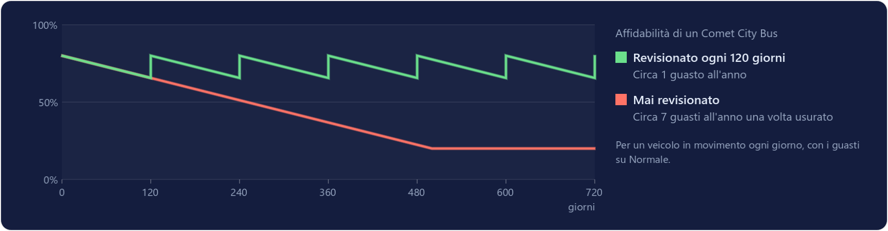

Depositi e revisioni
Da dove partono i veicoli e come restano affidabili.
I nuovi autobus, camion e treni escono da un deposito. Ci tornano per la revisione.
Depositi
- Scegli Deposito stradale in Strade o Deposito treni in Ferrovie e clicca su un terreno piano accanto alla tua strada o ai tuoi binari. R ne ruota la porta.
- Un deposito stradale costa 1.500 $ e un deposito treni 3.200 $.
- Un nuovo veicolo richiede un deposito collegato alla sua prima fermata. La finestra di acquisto dice quale manca.
- Navi e aerei non ne hanno bisogno: compaiono al loro primo molo o aeroporto.
Guasti e revisioni
- I guasti sono un'opzione della nuova partita: Nessuno, Ridotti, Normale.
- Ogni veicolo ha un'affidabilità che cala giorno dopo giorno, più in fretta quando è vecchio.
- Un veicolo poco affidabile si guasta e resta fermo da uno a tre giorni. Un treno dietro uno guasto aspetta a un segnale o a uno scambio; se tra loro non c'è né l'uno né l'altro, ci va a sbattere.
- Ogni 120 giorni un veicolo ha bisogno di una revisione. Dopo la prossima fermata passa da uno dei tuoi depositi lungo il percorso, ci resta un giorno ed esce affidabile come nuovo.
- Si usa solo un deposito entro 80 caselle dal veicolo, quindi costruiscine uno su ogni percorso lungo.
- Le navi si revisionano ai moli e gli aerei negli aeroporti. Gli aerei non si guastano mai.
- Una luce ambra lampeggiante indica un veicolo guasto. La sua finestra mostra l'affidabilità e l'ultima revisione.

